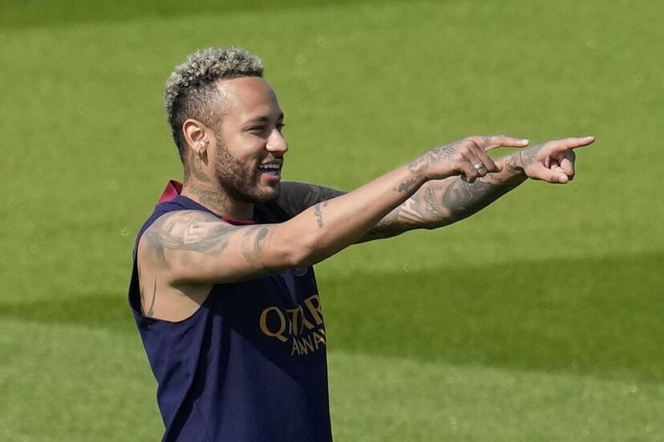

Messi

Lionel Messi, often considered one of the greatest football (soccer) players of all time, has a plethora of
interesting facts associated with his career and personal life:
Record-Breaking Career: Messi holds numerous records, including most goals scored in a calendar year
(91 in
2012), most goals scored in a single season of La Liga (50 in 2011-2012), and most FIFA Ballon d'Or awards
(7 as of 2022).
Youthful Beginnings: Messi was diagnosed with a growth hormone deficiency as a child, which
threatened his
football career until Barcelona offered to pay for his medical treatment. He moved from his native Argentina
to Spain at the age of 13 to join Barcelona's youth academy, La Masia.
Debut at 17:
Messi made his first-team debut for Barcelona at the age of 17 in 2004, becoming the youngest
player to represent the club in an official competition.
Champion with Barcelona:
During his time at Barcelona, Messi won numerous domestic and international titles,
including 10 La Liga titles and 4 UEFA Champions League titles.
All-Time Top Scorer for Barcelona:
Messi became Barcelona's all-time top scorer in official competitions in
2012, surpassing the previous record of 232 goals held by César Rodríguez.
Playmaking Ability:
While Messi is renowned for his goal-scoring prowess, he's also an exceptional
playmaker, often leading the charts in assists as well as goals in various seasons.
International Career:
Messi has represented the Argentina national team in multiple FIFA World Cup
tournaments and Copa America competitions. Despite facing criticism for not winning a major international
trophy with Argentina, he helped Argentina win the Copa America in 2021, ending a 28-year trophy drought for
the national team.
Global Icon:
Messi's fame extends far beyond the football pitch. He's a global ambassador for various brands
and has a massive social media following. His popularity rivals that of many Hollywood celebrities.
Move to PSG:
After spending his entire professional career at Barcelona, Messi left the club in 2021 due to
financial constraints preventing his contract renewal. He joined Paris Saint-Germain (PSG) on a free
transfer, marking a significant shift in his career.
Philanthropy:
Messi is involved in various charitable endeavors, including his own foundation, which focuses
on improving healthcare and education for vulnerable children around the world.
These are just a few highlights of Messi's remarkable career and life, which continue to inspire football
fans worldwide.
Mbappe

Young Achiever: Mbappé became the youngest French player to score in a World Cup when he scored
against Peru
in the 2018 FIFA World Cup at the age of 19.
World Cup Winner:
He played a pivotal role in France's 2018 FIFA World Cup triumph, scoring four goals in
the tournament, including one in the final against Croatia.
Golden Boy Award:
Mbappé won the Golden Boy award in 2017, which is given to the best young player in
Europe.
Neymar

Early Life:
Neymar was born on February 5, 1992, in Mogi das Cruzes, São Paulo, Brazil.
Youth Career:He began his football career at a young age and joined the Santos FC youth academy, where
his talent quickly became apparent.
Professional Debut:Neymar made his professional debut for Santos FC in 2009 at the age of 17.